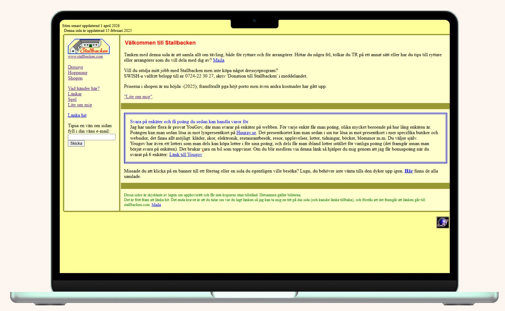
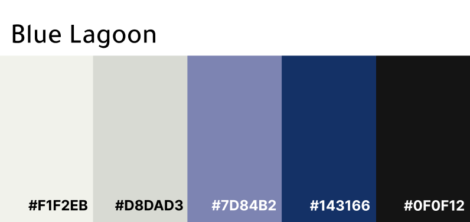

Case Study – Stallbacken
Re-imagining a well-known equestrian competition website with less cognitive load, clearer hierarchy and accessible contrast.
- Type
- Self-initiated concept
- My role
- Research, UX and UI
- Team
- Just me
01
Introduction
Stallbacken is a somewhat known website in the equestrian world that gathers useful tools and information about competition, both for riders and organizers. The idea of the website is very useful and could make it easier for equestrians who are new to the competitive world to find all the information they need.
However, I felt the design didn't yet reflect how valued the site is among equestrians. I saw this as an opportunity to re-imagine the digital experience and the way people engage with Stallbacken's content.
02
Challenge
At first glance, the website makes a bold impression. The start screen uses a strong colour that can be tiring for the eyes, and while Times New Roman is a classic, the uniform text size makes it hard to scan – even the menu titles share the same size as the body text.

03
Discovery
During my research I discovered that the website is run by one single person, not a team – someone with a burning interest in what they're creating. I decided to start with one objective for the redesign: lessen the cognitive load and give it a cleaner look. Later on I would love to expand on my work further.
04
Strategy
01
Create a cleaner look with less cognitive load and easier-to-read texts.
02
Give the experience a modern look that matches the site's strong reputation.
05
Solutions
1. A neutral colour palette
Since the website gives information about competitions, it needs to come across as trustworthy. Blue is used by many brands in the equestrian industry – such as Svenska Ridsportförbundet, who write the competition rules – so blue became the main colour.

2. Clearer hierarchy and more white space
Users should quickly understand what the site is about and easily find their discipline, such as dressage or showjumping. Discipline links sit at the top, with a clearly visible headline or hero image below the menu.
Instead of dividing everything with boxes and lines, different sizes for titles and paragraphs create the hierarchy. Secondary information – like shop pricing – moves from the start screen to its own page, which reduces the cognitive load.
3. Accessibility
A sans-serif font such as Inter or Instrument Sans makes the text easier to read, with bolder headlines and lighter paragraphs. The new palette also fixes contrast: today a #38AA76 text on #FFFFCC has a ratio of 2.84:1, while WCAG AA requires 4.5:1 for normal text.
2.84 → 4.5:1
Colour contrast before and after the redesign – from failing to passing WCAG AA for normal text.
07
The design
Implementing the changes above, I put together a mockup. The biggest differences are the clearer hierarchy, a clearly visible headline and more white space.

08
Impact
Measured
The new colour palette moves the text contrast from a failing 2.84:1 to at least 4.5:1, which passes WCAG AA for normal text. That makes the text easier to read for more people, including riders with low vision.
Not yet tested
Moving secondary information to its own pages and adding white space should make competition rules quicker to find – but this is a hypothesis. To test it, I would:
- Give 5 riders the same tasks on the old and the new design, e.g. “Find the rules for a dressage class”.
- Compare how many succeed, how long it takes and where they get stuck.
- Check the design with a screen reader and with users who have low vision.